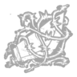

Глава 16:
Silent Hill
Персонажи

Шерил Мейсон
Чтобы успокоить совесть, Шерил стала волонтером в центре помощи для трудных подростков. Через три месяца она блестяще завершила обучение и получила право самостоятельно работать на горячей линии поддержки... но ничто не могло подготовить ее к тому первому звонку. Сначала в трубке звучали лишь помехи. Воздух сгустился, у земли заклубился темный туман, и внезапно раздался женский голос, который Шерил не ожидала услышать вновь.
Читать дальше...
Личные навыки:


Пирамидаголовый
Читать дальше...



Особая способность:
"Обряды осуждения"
Если выживший заходит или забегает на борозду, на него накладывается эффект "Мучение"; также при этом активируется "Инстинкт убийцы". Смертельно раненого выжившего с эффектом "Мучение" можно посадить в клетку искупления.
Кара обреченных:
Нажмите кнопку атаки при действующих "Обрядах осуждения", чтобы использовать "Кару обреченных". При этом вы выпустите перед собой волну силы, которая ранит любых выживших на своем пути.
Клетка искупления:
Нажмите кнопку активной способности, стоя над лежащим выжившим с эффектом "Мучение", чтобы посадить его в клетку искупления. Выжившие в клетке искупления могут быть принесены в жертву так же, как если бы они висели на крюке. На втором этапе жертвоприношения выжившие должны будут проходить проверки реакции, чтобы сдержать Сущность.
С выжившего снимается эффект "Мучение", если его спасают из клетки искупления, либо если он спасает из клетки другого выжившего.
Страшный суд:
Нажмите кнопку активной способности, стоя у умирающего выжившего с эффектом "Мучение", который дошел до фазы сопротивления на крюке или в клетке, чтобы его казнить.
Dead By Daylight
Контакты:
Помощь:
предложения отправлят сюда
@mail: dbd-help@mail.ru
D
E
A
D
E
A
D
B
Y
Y
D
A
Y
L
I
G
H
T
A
Y
L
I
G
H
T